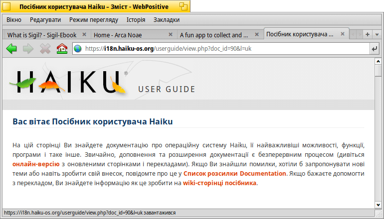
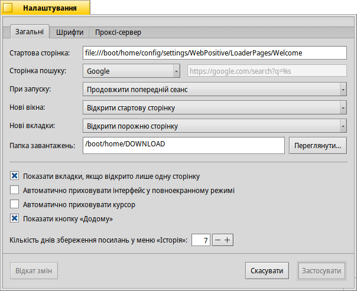
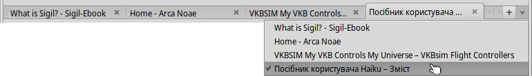
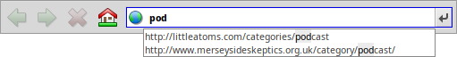
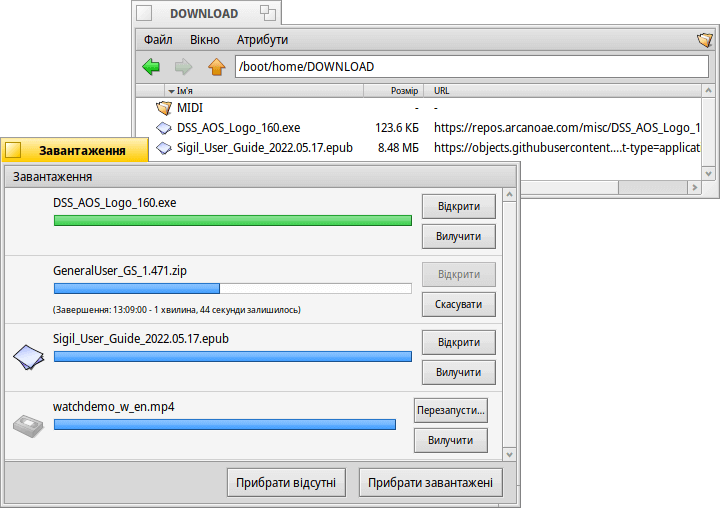

WebPositive (Браузер Інтернет)
| Deskbar: | ||
| Розташування: | /boot/system/apps/WebPositive | |
| Налаштування: | ~/config/settings/WebPositive/ – файли конфігурації, файли cookie, кеш браузера і історія веб-перегляду | |
| ~/config/settings/WebPositive/Bookmarks – усі закладки у вигляді окремих файлів |
WebPositive, або скорочено Web+ – це нативний веб-браузер Haiku. Одна частина його назви є відсиланням до простого NetPositive для BeOS, а інша вказує на його сучасну основу: WebKit. Ця бібліотека рендерингу HTML з відкритим вихідним кодом лежить в основі інших популярних браузерів, таких як Safari з Mac OS X та Google Chrome. Завдяки використанню WebKit, що постійно розвивається, Web+ зможе йти в ногу з новими веб-технологіями.
Інтерфейс WebPositive досить простий: Під рядком головного меню знаходиться ще один рядок з кнопками для переходу до попереднього і наступного сайтів у Вашій історії перегляду, для зупинки завантаження сторінки і (як опція) кнопка для переходу на домашню сторінку.
Далі йде текстове поле вводу «локатор» для введення URL-адреси сайту.
Під цією навігаційною панеллю відображаються веб-сторінки. Ви можете відкривати багато сторінок паралельно, завантажуючи їх в окремі вкладки.
У нижній частині вікна знаходиться рядок стану, в якому відображається URL-адреса сайту, що завантажується, або посилання, на яке наведено курсор миші. Під час завантаження сторінки праворуч відображається індикатор виконання.
 Налаштування
Налаштування
З меню Ви можете відкрити панель , щоб настоїти деякі основні параметри WebPositive.
Перша вкладка містить загальні настройки: Який файл або URL-адреса буде , що використовується як (якщо Ви встановили відмінну від стандартної пошукову систему, «%s» використовується як змінна для правил пошуку), яка використовується для збереження матеріалів, які Ви отримуєте з мережі Інтернет.
За допомогою трьох списків які розкриваються, Ви можете вирішити, що робити при запуску браузера та яку сторінку завантажувати (якщо вона є) під час відкриття нового вікна чи вкладки.
Наступні чекбокси дозволяють Вам: не відображати панель вкладок, якщо відкрита лише одна сторінка; приховати інтерфейс WebPositive у повноекранному режимі; приховати курсор миші, коли його не переміщують протягом певного часу.
Нарешті, Ви можете додати кнопку «Додому» до навігаційної панелі і задати кількість днів, протягом яких браузер зберігає у своїй історії відвідані Вами сайти.
На другій вкладці Ви можете вибрати шрифти, які будуть використовуваться в якості стандартного шрифта, шрифта із зарубками, шрифта без зарубок і моноширинного шрифта а також установити їхні розміри за замовчуванням.
Остання вкладка використовується для настройки проксі-сервера.
Перегляд
Якщо Ви користувалися будь-яким браузером раніше, WebPositive не повинен піднести Вам багато сюрпризів. Замість того, щоб розглядати кожен пункт меню і функції браузера, давайте розглянемо лише кілька моментів.
- 
Нові вкладки створюються за допомогою кнопки + праворуч на панелі вкладок або, якщо там ще достатньо місця, подвійним кліком миші на порожньому місці. Якщо відкрито більше вкладок, ніж вміщається на панелі, стають активними кнопки прокрутки < >, які дозволяють прокручувати панель вкладок вліво і вправо. Кнопка ∨, крайня праворуч, містить випливаюче меню з усіма відкритими вкладками для ще швидшої навігації.
Клік середньою кнопкою миші на посиланні відкриває сторінку у новій вкладці у фоновому режимі. Якщо зробити клік середньою кнопкою миші з натиснутою клавішею SHIFT, вкладка відкриється на передньому плані.
У меню Ви можете або масштаб сторінки. Також є пункт , який дозволяє залишити усі зображення в оригінальному розмірі.
Якщо Ви переключилися у повноекранний режим і активували опцію приховування інтерфейсу, він зникне через секунду. Щоб тимчасово повернути його назад, просто підведіть курсор миші до верхньої частини екрана.
- 
Поки Ви вводите текст у текстовому полі «локатора», браузер зіставляє рядок із сайтами, які Ви відвідували раніше і показує їхні URL-адреси під текстовим полем у вигляді підказки. Ви можете або продовжувати додавати літери, щоб скоротити список можливих сайтів, або вибрати запис за допомогою клавіш ↑ чи ↓. Натискання клавіші ENTER завантажить сторінку. Ви можете скористатися крайньою правою кнопкою на панелі навігації, яка теж виконує перезавантаження сторінки.
Рядки, які не розпізнаються як URL-адреси, будуть шукатися за допомогою пошукової системи, встановленої в настройках WebPositive, тому поле локатора виконує функцію швидкого переходу до веб-пошуку.WebPositive підтримує параметри рядка для швидкого перенаправлення пошукових запитів до різних пошукових систем. Просто введіть однолітерний параметр, за яким слідує Ваш пошуковий запит.
- «g» для Google
- «b» для Bing
- «w» для Wikipedia
- «d» для DuckDuckGo
- «a» для Baiku
- «y» для Yandex
- «e» для Ecosia
- «q» для Qwant
Клік правою кнопкою миші відкриває контекстне меню, яке, залежно від об'єкта, на який Ви натиснули, пропонує відкрити посилання у новому вікні або на новій вкладці, завантажити об'єкт тощо.
Пункт меню відкриває панель пошуку у нижній частині вікна браузера, щоб розпочати пошук на сторінці. Знайдені на сторінці рядки підсвічуються.
Закладки
Закладки WebPositive зберігаються як файли і папки у каталозі ~/config/settings/WebPositive/Bookmarks/. При додаванні закладки там просто створюється новий файл. Крім того, Ви можете перетягнути «значок» сайту, який знаходиться перед URL-адресою, у будь-яке відкрите вікно Tracker або на Робочий стіл, або навіть на Панель закладок (активується командою ).
Ви можете швидко відкрити каталог Bookmarks за допомогою пункту меню .
Ви можете змінити URL-адресу, назву, заголовок і ввести ключові слова закладки так само, як і для будь-якого іншого файлу з атрибутами. Просто переконайтеся, що у Вас відображені усі стовці у меню Tracker, потім виберіть файл, натисніть ALT E і почніть редагування атрибута; змінюйте стовці атрибутів за допомогою клавіші TAB.
Ви можете розміщувати закладки у різних папках, які створюєте самостійно.
Використовуючи Tracker для управління і навігації закладками, Ви можете скористатися його унікальними можливостями, щоб швидко знаходити те, що шукаєте.
Активувавши опцію у налаштуваннях Tracker, Ви можете миттєво скоротити список закладок до тих, що відповідають Вашому фільтр-рядку. Ще кілька натискань на ↑ або ↓ для переміщення виділення по списку і натискання клавіші ENTER відкриває сайт. Переконайтеся що відображаються усі стовпці атрибутів, щоб фільтр застосовувався до імені, назви, URL-адреси та ключових слів.
Щоб це працювало, усі закладки слід зберігати у каталозі ~/config/settings/WebPositive/Bookmarks/ і лише копії слід розміщати у власні підпапки для використання у меню WebPositive (якщо це взагалі потрібно). Крім того, заповнення атрибуту ключових слів допоможе…
Завантаження
Пункт меню відкриває вікно зі списком усіх попередніх і поточних завантажень:
Файли, що завантажуються у даний момент, показуються зі зростаючим індикатором виконання (прогресу) і, подібно до копіювання файлів у Tracker, інформацією про швидкість завантаження, розмір файлу та очікуваний час завершення. Кнопки праворуч дають змогу і завантаження, файл або його зі списку. Кнопки і у нижній частині вікна роблять це для усіх записів у цьому списку. «Відсутніми» вважаються файли, які було видалено за цей час.
Переміщення файлу, який зараз завантажується до Смітника зупинить завантаження. Ви також помітите, що його значок стає матовим (напівпрозорим).
Загалом, WebPositive дуже терпимо ставиться до управління файлами за допомогою Tracker. Файли можна перейменовувати або переміщувати навіть під час завантаження і навіть після завершення завантаження ці зміни відображаються у вікні завантажень.
Ви коли-небудь цікавилися, з якого сайту завантажили певний пакет, зображення або будь-який інший файл? Ви можете відстежити це, відкривши файл за допомогою DiskProbe і подивившись на його атрибут META:url.
Бажаєте щоб URL-адреса постійно відображалася у Вашому каталозі завантажень? Просто копіюйте туди закладку, увімкніть відображення стовпця атрибута URL-адреси закладки і знову її видаліть.
Клавіші швидкого доступу
Ось декілька корисних комбінацій клавіш:
| ALT T | Відкрити нову вкладку. | |
| ALT W | Закрити поточну вкладку. | |
| ALT N | Відкрити нове вікно. | |
| SHIFT ALT W | Закрити поточне вікно. | |
| ALT ENTER | Перейти до повноекранного режиму. | |
| ALT R або F5 | Обновити поточну сторінку. | |
| ALT H | Відкрити домашню сторінку. | |
| ALT D | Показати/сховати вікно завантажень. | |
| ALT F | Відкриває панель пошуку на сторінці (клавіша ESC приховує відкриту панель). | |
| ALT B | Додати поточну сторінку до закладок. | |
| ALT M | Відкрити каталог «Закладки» для управління закладками. | |
| ALT ← | Попередня сторінка в історії. | |
| ALT → | Наступна сторінка в історії. | |
| ALT + / - | Збільшити/Зменшити розмір елементів веб-сторінки (те саме, що і ALT + коліщатко миші). |